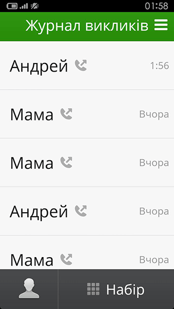
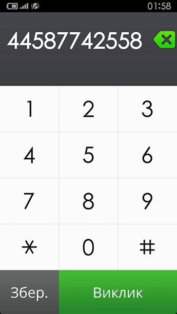
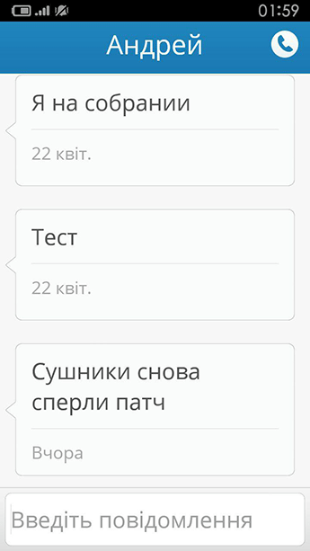
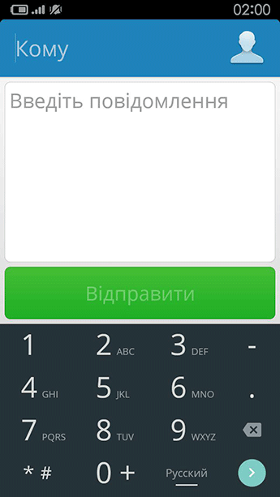
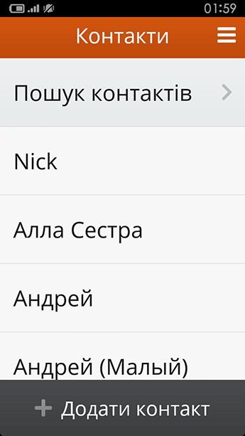
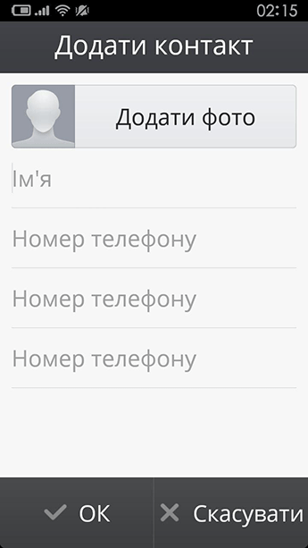

Основні функції
- Натискання та свайп
Для взаємодії з елементами інтерфейсу і виконання натискання просто торкайтеся до них. Для виконання свайпа швидко проведіть пальцем по поверхні екрану. Жест свайпа зазвичай використовується для навігації між екранами. - Тривале натискання та перетягування
Для виконання тривалого натискання доторкніться до елементу на екрані і не відривайте палець доки не відбудеться дія. Щоб перетягнути елемент, торкніться та утримуйте його деякий час, а потім, не відриваючи пальця, перемістіть його в потрібне місце.
Робочий стіл

- Для перегляду різних додатків на головному екрані виконайте свайп вліво або вправо.
- Щоб відкрити додаток натисніть на відповідну іконку.
Телефон

- Журнал викликів
Пропущені виклики будуть виділені червоним кольором.
Для перегляду інформації про контакт, натисніть на його ім'я.
Щоб зателефонувати, натисніть "Виклик".

- Збереження контактів
У вікні набору номера натисніть "Зберегти", щоб зберегти введений номер.
Обмін повідомленнями

- SMS-повідомлення
Непрочитані повідомлення виділені червоним кольором.
Для перегляду повідомлень натисніть на ім'я контакту.
Щоб написати повідомлення, натисніть "Нове повідомлення".

- Листування
Для збільшення розміру шрифту повідомлення натисніть на нього.
Щоб текст повідомлення був зачитаний вам вголос, натисніть на іконку динаміка.

- Написання повідомлення
Натисніть "Нове повідомлення", введіть номер телефону одержувача або виберіть зі списку контактів, напишіть ваше повідомлення і натисніть "Відправити".
Контакти

- Пошук контакту
Ви можете швидко знайти контакт, вибравши першу букву його імені.

- Додавання нового контакту
Введіть ім'я контакту, потім трохи нижче введіть його номер телефону та натисніть "ОК".